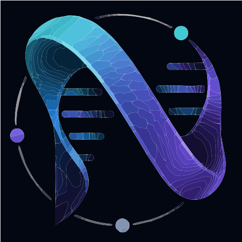

Our mission is to power precision medicine, biologics, synthetic biology and translational science through autonomous discovery, leveraging computational therapeutics, genomic/proteomic systems, formulation intelligence and regenerative medicine within a probabilistic biomedical infrastructure.
Learn MoreBorn out of TheraVac Biotech and the Genovate R&D framework, NexiThera is a new incarnation designed to explore biology through autonomous scientific discovery. Our venture is built on the belief that verifiable intelligence can transform how we think about health — from discovery to translation. We integrate EpistemicOS — our recursive cognition infrastructure — with advanced formulations from ChronoThera, probabilistic models and ethical governance to create a closed‑loop engine capable of transparent reasoning and reproducible simulations. By fusing multi‑omics, clinical, genomic and proteomic data, we build digital twins and run endless simulation loops that support precision medicine, computational therapeutics and formulation intelligence across all sectors.
Genovate is the core drug-discovery workbench of NexiThera: a dedicated platform for transforming biomedical data, hypotheses, simulations, AI-agent outputs, and Guardian decisions into traceable discovery programs. It connects oncology & immunotherapy, biodefense, advanced formulation, regenerative medicine, longevity, and synthetic biology pipelines to EpistemicOS for verifiable reasoning and recursive scientific cognition.
EpistemicOS is the kernel for verifiable intelligence: a sector‑blind infrastructure for transparent reasoning, reproducible simulations and governed coordination across Zones, digital twins and advanced CXUs. It orchestrates autonomous scientific discovery by ensuring every assumption and calculation can be explained, audited and reused.
Specialised AI agents — up to 10 powerful AI‑Agents — collaborate to ingest data, generate hypotheses, run simulations and interpret results. This distributed architecture allows different agents to focus on precision medicine, biologics, synthetic biology, translational science and computational therapeutics while sharing insights through a common epistemic fabric.
Our human variant, the Guardian, provides the ethical compass and critical oversight required for autonomous discovery. Guardians interpret high‑level insights, adjudicate ambiguous situations and enforce transparent decision‑making. They bridge the gap between AI autonomy and human responsibility, ensuring translational science advances safely and equitably.
We unify public, proprietary, synthetic and operational data across multi‑omics, clinical and real‑world domains to create comprehensive digital twins and simulation environments. By integrating genomic and proteomic systems with probabilistic models, we build a probabilistic biomedical infrastructure that feeds formulation intelligence and computational therapeutics.
Targeted cancer therapies and next‑generation immunotherapies built with precision medicine, biologics and computational therapeutics. Our engine simulates tumour microenvironments and immune responses to accelerate translational science and guide patient‑specific treatments.
Designing and optimizing biological circuits through simulation and probabilistic models. We integrate genomic and proteomic systems to build novel life forms, support translational science and open new frontiers in synthetic biology.
Harnessing stem cell biology, tissue engineering and longevity pathways to repair and regenerate tissues, extend healthy lifespan and combat age‑related diseases.
ChronoThera‑driven controlled release and advanced formulation technologies harness formulation intelligence to deliver the right dose at the right time, enabling personalised therapy and bridging laboratory discoveries to clinical practice.
Developing rapid-response biomedical countermeasures for high-consequence infectious threats, including mpox, hantavirus, and other emerging or re-emerging outbreaks. NexiThera integrates autonomous discovery, biologics, computational therapeutics, genomic/proteomic intelligence, and Guardian-reviewed preclinical workflows to accelerate candidates from outbreak signal to validated intervention strategy.
Stay tuned for upcoming publications, press releases and updates.
Join us at the intersection of mathematics, AI and life sciences. We are looking for researchers, engineers and ethicists to build the future of autonomous discovery.
Interested in collaborating? Have questions? Drop us a line at info@nexithera.com or follow our updates on social media.
Powered by EpistemicOS©, an OmniCortex Systems© spin-off.
We are preparing our full privacy policy. Please contact us for any data protection requests.
Use of this website is subject to our upcoming terms of service. For partnership or legal questions, email info@nexithera.com.